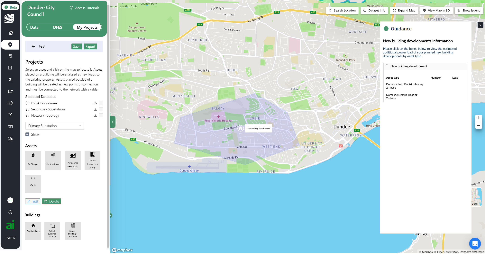

It is a relatively new product, the digital twin of a process its final users do not usually manage on their own, whereas the goal of the product is to be a self-service solution, the first of its kind at that. As a result, when the technology deployment planning feature (named “Projects”) was initially built (before my tenure) quite a few assumptions about what the users’ goals and needs consisted of were made, and has they started to use the product in anger, questions and feature requests started coming in thick.
The Problem
Discovery and User Research
Rather than simply accommodate feature requests made by the users, I decided to analyse their feedback and run usability testing sessions with a panel of users representative of our main personas with the following goals:
- Validate (or disprove) the initial assumptions;
- Identify any recurrent usability issues;
- Spot any functionality or data gaps;
- Compile a list of suggested follow up actions and submit it to the wider product team for grooming and prioritisation.
The results did validate the main assumption, i.e. that this feature was needed and deemed useful by the vast majority of the participants. I did, however, uncover some UI issues (mainly around element placement in the left and right sidebars) and functionality gaps (e.g. assets could not be mass-deployed to an area but only on buildings, deployment filtering was very limited, planning for new building developments was awkward, some error exception states were missing, to name a few).
After presenting these findings to our stakeholders (the DNOs who had originally commissioned the tool) we decided a major upgrade to the “Projects” feature was needed to address all the issues we had identified. Working with the Product Managers, we then created epics and related user stories to plan for its delivery.
UX/UI Design and prototypes
Once we had defined the scope of the project, I could start creating mockups and clickable prototypes to verify feasibility, collect feedback and estimate efforts with our engineers



Usability testing
I ran a second round of usability testing sessions, using the same scripts but a different user panel, this time on clickable Figma prototypes, with the goal of validating our new approach. The results were positive, although I did capture a few additional user needs which required additional data that was unavailable at the moment to be fulfilled (those were added to the backlog for later planning).
Code preview QA
During the build phase, I participated in early QA on code preview versions of the product, to ensure alignment of the build with the UX goals.
Outcome
20% less training time
The customer success team reported 20% less time needed during onboarding to explain the feature.
60% fewer support requests
We experienced a 60% decrease in support requests for it month-on-month for the accounts that the feature had been rolled out for.
50% faster engagement with the feature
The average time it takes for a given user to publish their first project after onboarding has decreased by 50% month-on-month.